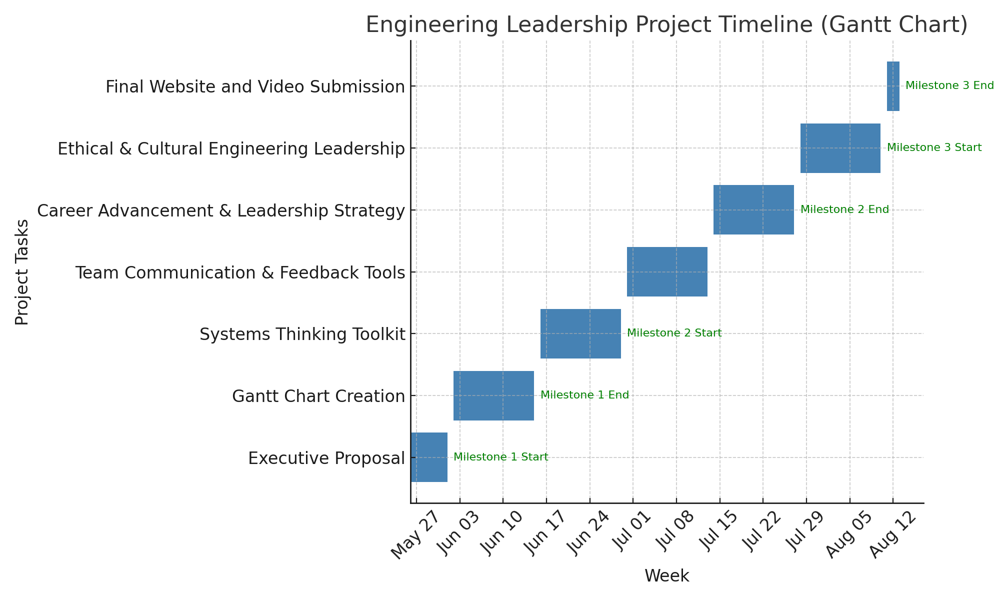
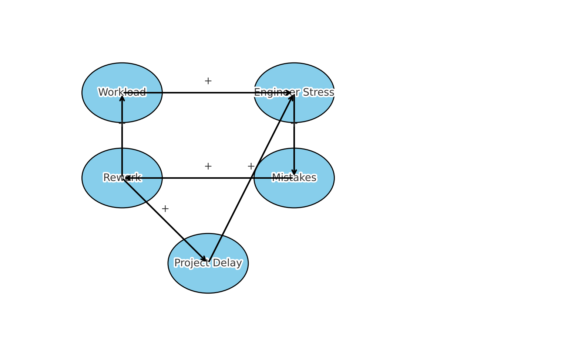
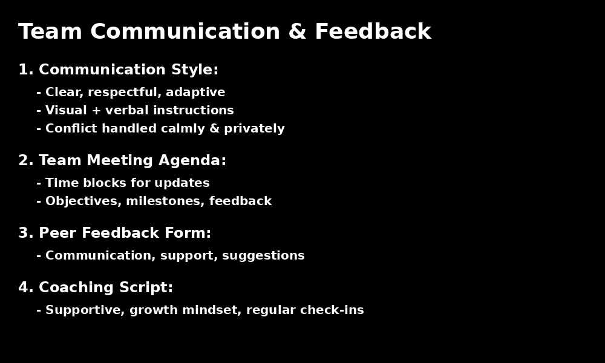

My Mission
I am committed to becoming a culturally adaptive, ethical, and forward-thinking engineering leader—driving innovation while supporting diverse teams and sustainable solutions.
About This Portfolio
This Engineering Leadership Readiness (ELR) Portfolio showcases my leadership journey through systems thinking, communication tools, ethical practices, and strategic planning. It reflects my readiness to take on leadership roles in the U.S. engineering industry.
Project Timeline (Gantt Chart)
Systems Thinking Toolkit
Team Communication & Feedback
Career & Performance Strategy
This section includes leadership development planning, self-assessment tools, and a mock evaluation template to demonstrate readiness for performance management roles.